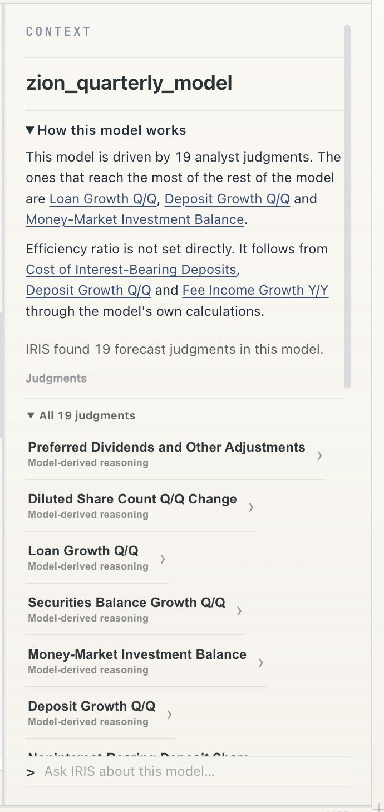
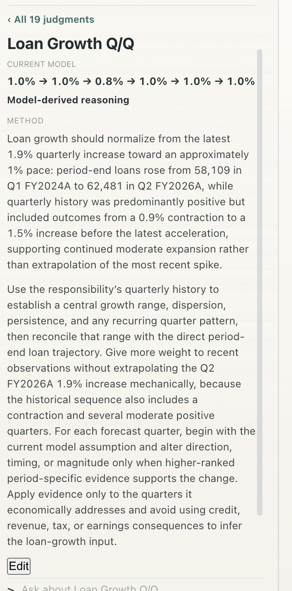
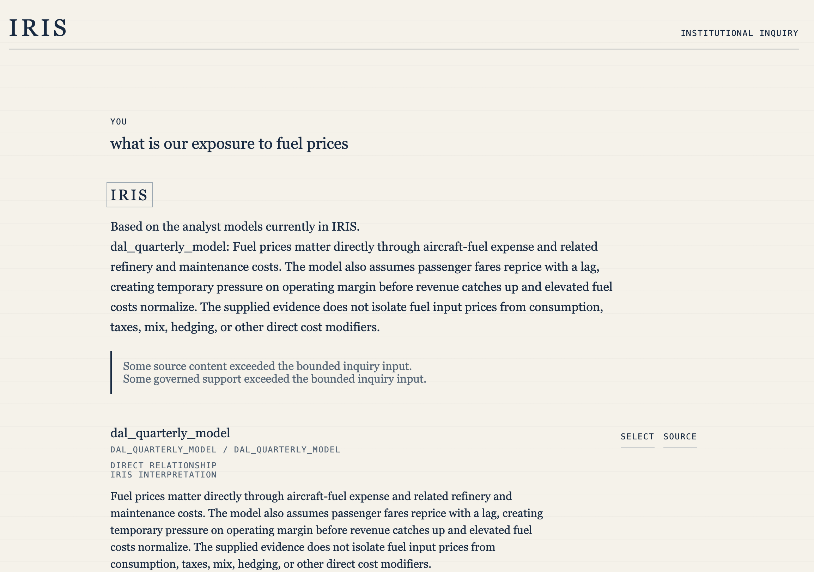

01
What actually drives the model?
The workbook contains formulas and dependencies. IRIS turns that machinery into an intelligible account of the economic system.
Our first product is IRIS.
The sense-making layer for consequential analytical models. Import a model: IRIS creates a plain-English How this model works, identifies the key forecast judgments and their reach, and makes each judgment an English-readable, LLM-runnable Method. Every Method, model run, and result is versioned and snapshotted, so the work can be understood, interrogated, changed, and remembered.
Spreadsheets are good at preserving calculations. Frontier models are good at reasoning. Neither, by itself, preserves the meaning an analyst needs to understand and change a consequential model.
The workbook contains formulas and dependencies. IRIS turns that machinery into an intelligible account of the economic system.
IRIS separates uncertain inputs the analyst must forecast from values determined by the model's logic.
Methods connect each important forecast to the reasoning, assumptions, and evidence behind it.
The relevant evidence and known unknowns stay attached to the judgment they inform.
Execution turns revised judgment back into numbers and carries the consequence through the workbook.
IRIS connects model truth, economic meaning, analyst judgment, execution, and history in one durable system.
IRIS turns an unfamiliar workbook into a model-level explanation and a map of the judgments inside it. From there, the analyst can open any judgment as a Method—without losing the cells, formulas, evidence, or history underneath it.
Import the workbook the analyst already uses. Excel remains the model; IRIS begins with its actual cells and formulas.
Deterministically establish periods, formulas, dependencies, assumptions, historical series, and current forecasts—then explain the system in plain English.
Identify the variables an analyst must judge, show which reach the most of the model, and separate them from calculated consequences.
Open any judgment to see its current forecast and model-derived reasoning: how to forecast it, what evidence matters, and when the view should change.
Execute the Method through =IRIS.AI(), preview the result, and carry the changed view through the workbook.
Bind the model, Method, evidence, Run, and Result to one immutable point-in-time record.


The model becomes working context for people and AI—not just a collection of cells and formulas.

The model becomes a legible, interactive system rather than a grid that must be reverse-engineered every time.
Select an output, assumption, or driver. Ask why it changed, what drives it, or what the analyst believed last time.
IRIS connects the formulas to the Method, assumptions, evidence, and history behind the answer.
Edit the judgment in plain English, run it in the model, and trace the result back to the Method, evidence, Version, and prior call.

Stop tracing precedents and reconstructing someone else's logic before you can answer a basic question.
IRIS owns the analytical model and its history. Excel is an analyst-native client of it.
IRIS preserves the prior call, the facts behind it, what changed, why it changed, and what the judgment affected.
Every answer and model change can be traced to the exact company, model, subject, Method, Version, evidence, and lineage that produced it.
Exact identities. Traceable evidence. Versioned judgment. Durable analytical memory.
IRIS is the sense-making layer for consequential analytical models.